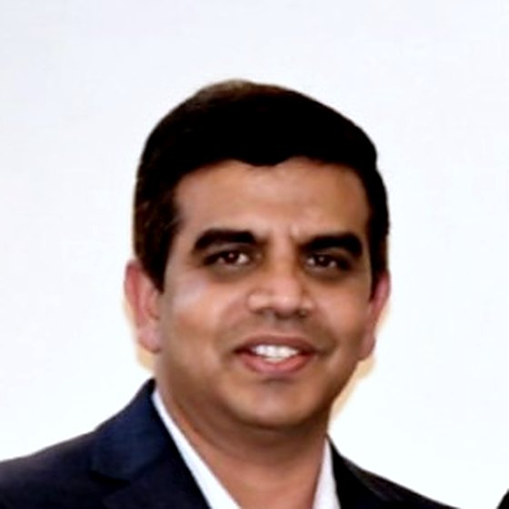

I build the platforms developers build on.
Senior Technology Strategy Manager and solutions architect. I design internal developer platforms, put AI coding assistants to work, and modernize core systems in financial services.

Where I focus
Developer experience
Internal developer platforms, developer portals, self-service tooling and standard architecture documentation, so teams spend time on product work rather than setup.
AI-driven engineering
Rolling out GitHub Copilot, Cursor and Claude, and measuring their productivity and ROI with custom analytics rather than anecdotes.
Modernization and reliability
Cloud-native patterns, microservices, SRE and observability, and moving legacy relational systems to NoSQL at scale.
Experience
- Sep 2023 to present
New York, NYSenior Technology Strategy Manager
Intercontinental Exchange (ICE)
- Architected and launched DevX, an internal developer platform unifying Azure DevOps and GitHub and speeding up application onboarding.
- Built analytics dashboards that measure the productivity impact and ROI of AI coding assistants across engineering teams.
- Optimized CI/CD with GitOps to cut environment provisioning friction and speed up releases.
- Interview, onboard and mentor university interns, many of whom moved into full-time engineering roles.
- May 2022 to Sep 2023
Jacksonville, FLSenior Technology Strategy Manager
Black Knight
- Designed developer portals and reusable integration frameworks used across engineering groups.
- Embedded cloud-native design patterns with service and account leadership, and briefed C-suite leaders on legacy modernization roadmaps.
- Led the corporate Hackathon as Event Lead, bringing engineering, product and business teams together to prototype and pitch solutions.
- Nov 2013 to Apr 2022
Jersey City, NJVice President, Software Engineering
JPMorgan Chase & Co.
- Led application modernization on Java/J2EE and microservices, and built the frameworks that drove SRE adoption using OpenTelemetry, Dynatrace, Jaeger, Prometheus, Splunk and Envoy/Istio.
- Lead Architect for a large-scale migration from Oracle to Apache Cassandra, covering data modeling and high-throughput design.
- Built conversational AI and virtual assistant frameworks integrated into core banking platforms.
- Created portal frameworks in ReactJS, Node.js, TypeScript and ExtJS so internal teams could ship client analytics dashboards quickly.
Selected work
DevX
Internal developer platform joining Azure DevOps and GitHub, with self-service access to platform tools, internal microservices and architecture documentation.
AI coding assistant ROI
Custom dashboards that show how GitHub Copilot, Cursor and Claude change engineering productivity, alongside rollout of Claude Skills and Copilot.
Enterprise SRE frameworks
Shared observability and telemetry building blocks that made SRE practice repeatable across JPMorgan Chase teams.
Oracle to Cassandra migration
Lead architecture for moving a high-volume workload from relational to NoSQL, including data modeling.
Background
Earlier career
Morgan Stanley, Senior Lead Software Engineer (2012 to 2013). Java/J2EE mortgage applications and rules engines for Anti-Money Laundering compliance.
S&P Global, Technical Specialist (2010 to 2012). Structured finance, mortgage-backed securities, portfolio management and ratings platforms.
Ness Technologies, Tech Leader (2004 to 2009). Delivered platforms for Franklin Templeton, Finaplex and S&P.
Oxygen Networks, Senior Software Engineer (2002 to 2004). Enterprise software for Wells Fargo, Bank of America and Citigroup.
Education
Master of Computer Applications, Indira Gandhi National Open University
Post Graduate Diploma in Computer Applications, Indira Gandhi National Open University
Bachelor of Science in Electronics, Osmania University
Beyond the code
I mentor university interns into full-time roles and run hackathons that turn business problems into prototypes.
Contact
If you are working on developer platforms, AI-assisted engineering or modernization in financial services, I would like to hear about it.